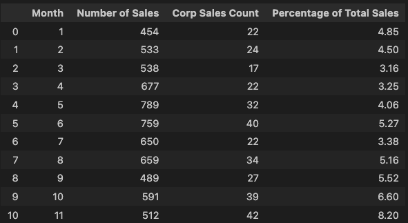
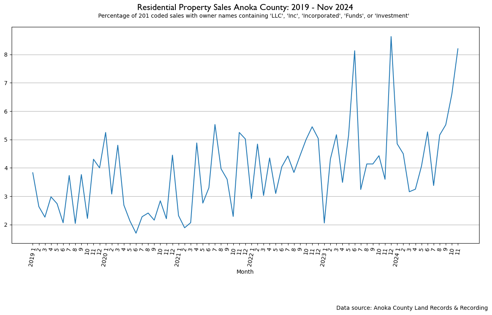
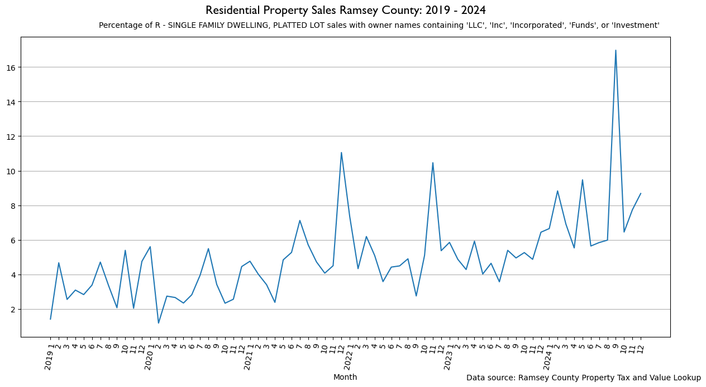
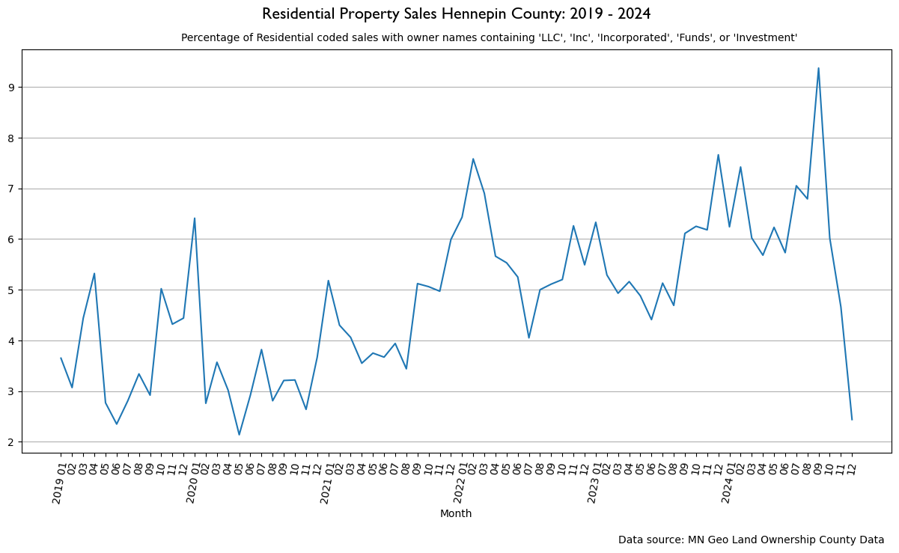

This project contains residential housing sale data and analysis on 3 Metro Twin Cities Counties: Anoka, Hennepin, and Ramsey. The inital project was to include all seven of the Metro area counties listed below:
However, some county Recorders require paid subscriptions to access property sale data, charging as much as $2.00 per document viewed. Others were interactive maps ONLY, without any way to mass-export data. Because I'm a regular guy, I'm not going to pay that much, nor do I have the leisure time to spend doing so. Mercifully, the Minnesota Geospatial Information Office contained many county land ownership property parcel datasets, which included property sale information. The Hennepin County dataset was pulled from here.
Anoka residential property sale data was downloaded from the Anoka county website and filtered by month and property type Class 1. According to MN Statute 273.13 Class 1 is divided into two main residential property classes: Class 1a properties are "real estate which is residential and used for homestead purposes," and Class 1b is the same except for people with disabilities.
Ramsey County property sale data was filtered by month, year, and property type (residential), then downloaded from their property search tool.
Hennepin County property sale and ownership data was downloaded from the MN Geospatial Information Office as listed above. It was then filtered by property type (residential).
Because each county's property recording methods were different, each county's data was structured differently, requiring slightly different cleaning, processing, and analysis steps. A Jupyter Notebook is paired with with each county's data reflecting this. All analysis was done in Python, and visualizations were made with Matplotlib.
The datasets are stored in Google Drive because of their size.
Anoka data was the most time-intensive to clean, process, and analyze, as it was organized in month or half-month chunks. The Anoka property search only allowed 1000 records to be exported at a time, so if a month contained more than 1000 home sales, the data range was filtered for half the month to avoid this limit. Furthermore, sales dates were not able to be included in the standard property sale data export; the dates had to be exported separately. There are essentially two files per month: one containing the sales date, and another containing the seller/buyer info, property info, etc.
The datasets were only extractable as PDFs, although the data was in tabular format. PDF Plumber was used to extract the rows of data and then combined it into Pandas DataFrames, a set for sales dates and a set for remaining sales information. Sales dates were strings and needed to be converted to datetime objects for later grouping. For some reason (my email to the county remains unanswered) there are some duplicate parcel numbers in each dataset. Duplicate parcel numbers did not allow joining and so were dropped, keeping the last duplicate. Once duplicates were dropped and the date column was converted, the date and sales info DataFrames were then joined using the property ID numbers (parcel numbers), and the total sales counted and grouped by month of sale before putting that series into a DataFrame (for later joining).
A piped string list was created to search property owner name strings containing:
Properties with any of the above strings in the owner name were kept, then the sales were counted and grouped by month (like total sales above). This series of total sales to private equity by month totals was added into the total sales by month DataFrame above. The percentage of total sales to private equity metric was then calculated as a new fourth column with the final DataFrame output below:

This process was done six times, once for each year from 2019-2024, and each resulting DataFrame was outputed as a csv.
Those files were then read back in, the year added as a string before each January on each DataFrame, and finally they were all joined
into one large DataFrame. This DataFrame was then plotted using Matplotlib.

Ramsey county was much easier than Anoka since an entire year could be exported as an xlsx file.
Each year file was read into a Pandas DataFrame, then filtered to three columns: Sale Date, Land Use, and Tax Payer Names. Next,
the property type (Land Use) was filtered by R - SINGLE FAMILY DWELLING, PLATTED LOT as this was the most common residential
property type. Sales were then counted and grouped by month of sale, put into a DataFrame, and then the filtered DataFrame filtered again
by the Tax Payer Name containing any of the private equity strings. Sales to private equity were counted and grouped by month, with the
resulting series added as a new column to the total sales DataFrame. Finally, the sales to private equity metric was then calculated and
added as the fourth column. This process was done six times, once for each year from 2019-2024, and each DataFrame was exported as a
csv.
Those files were then read back in, the year added as a string before each January on each DataFrame, and finally they were all joined into one large DataFrame. This DataFrame was then plotted using Matplotlib.

Hennepin county was a large csv file (360MB) containing all property parcels in Hennepin county.
This data was filtered by property type (residential), then filtered for only sales dates containing the year strings from 2019-2024
(the sales date is only listed as month and year in this dataset). The DataFrame is then filtered down to three columns: Property ID,
Owner Name, and Sales Date. The year and month of sales were made their own respective columns by pulling them from the initial sales
date string. The original sales date column was then dropped.
A DataFrame was then created for each year of sale from 2019-2024, and each DataFrame of sales was then counted and grouped by month before being put into a new DataFrame. The year DataFrames containing the owner name were then filtered again by the private equity string pattern, and finally the sales to private equity were counted and grouped by month. This series was added to the total sales DataFrame, and a fourth column for the percentage of total sales to private equity was calculated.
Since these DataFrames were extracted from one large DataFrame, no exporting/importing was needed. The resulting six DataFrames had the year string added into each month column containing January, the DataFrames were concatenated, and the result plotted with Matplotlib.

There is a clear trend up and to the right in all three graphs, indicating an increasing presence of private equity in the residential housing market in all three counties. There is a further pattern of private equity typically buying residential property in the winter months when regular consumer demand, and therefore price, is low.
Further analysis could be done on surrounding home values to see if there is any effect on overall market prices due to the presence of private equity. Additionally, a more detailed analysis of the distribution of private equity entities would be insightful. This would show how many distinct entities are active in the residential housing market, as well as their concentration and size of presence. However, I don't have the time for that analysis (someone please do it, it'd be very interesting).
Regular people buy regular homes to do regular life things. In an already supply-starved market, the fact that private equity can swoop in with loads of liquid cash and outbid regular people is, in my mind, a travesty that should not be allowed to happen. Furthermore, a housing market's purpose is to allow people to buy a house to live in, not a smorgasboard for someone's investment portfolio. Markets typically function effeciently and effectively when the playing field is level (i.e., competitive; when the players are fairly equal). How is it fair or competitive when I have $10,000 for a down payment while some hedge fund has the full market price in cash? The power imbalance is clear, and my Christian convictions drive me to favor the less powerful over the more powerful. The presence of private equity in the residentail housing market is, above all, a moral concern. Do we want communities whose home prices, and therefore availability, is dictated by corporate interests far removed from the actual lived life of our communities?
There are likely many local or state policies which could be enacted to combat the presence of private equity in the residential housing market. I recommend we do so and support the regular families in our communities.